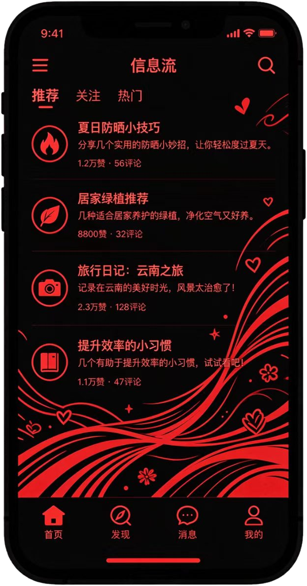
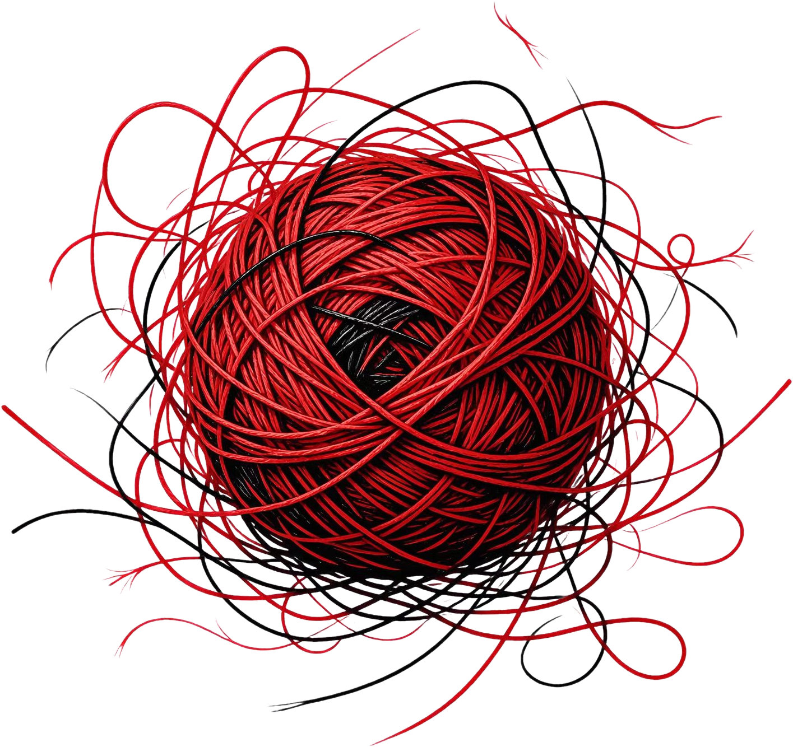
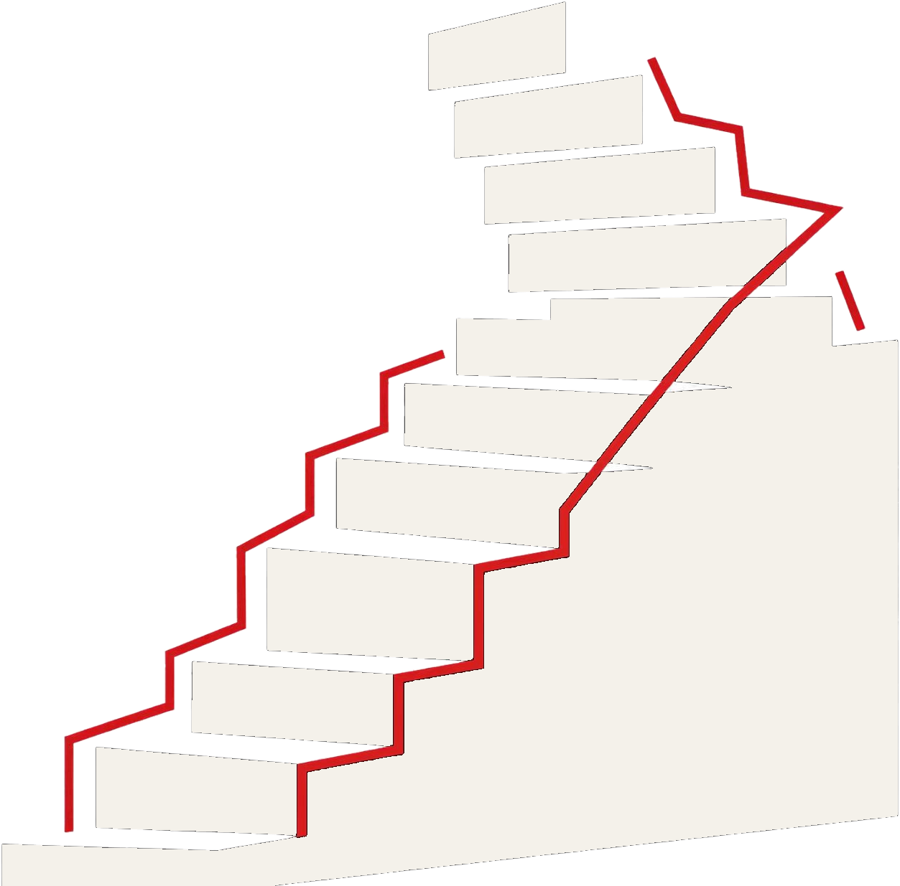
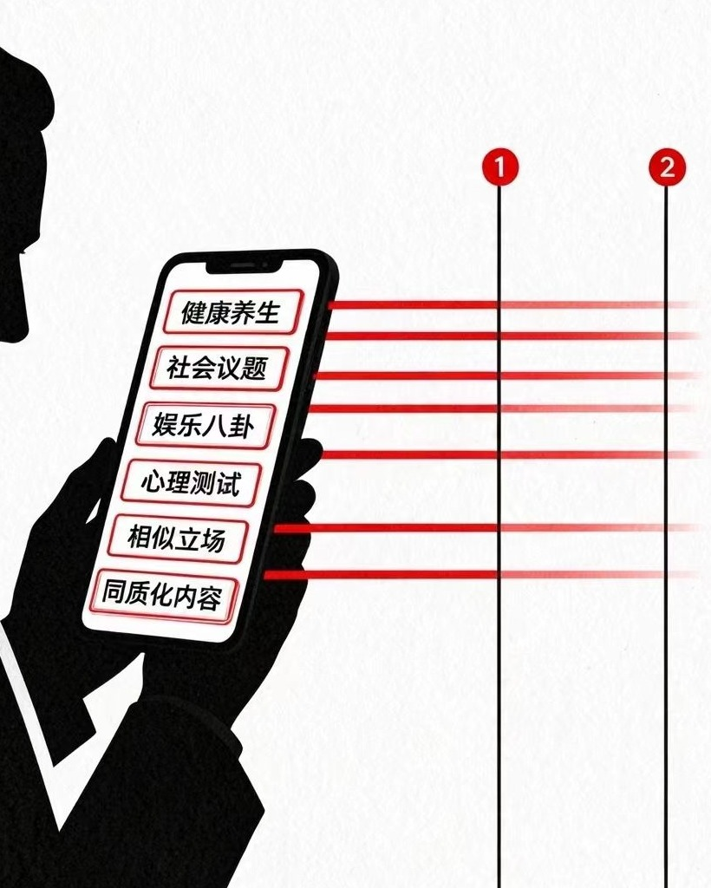
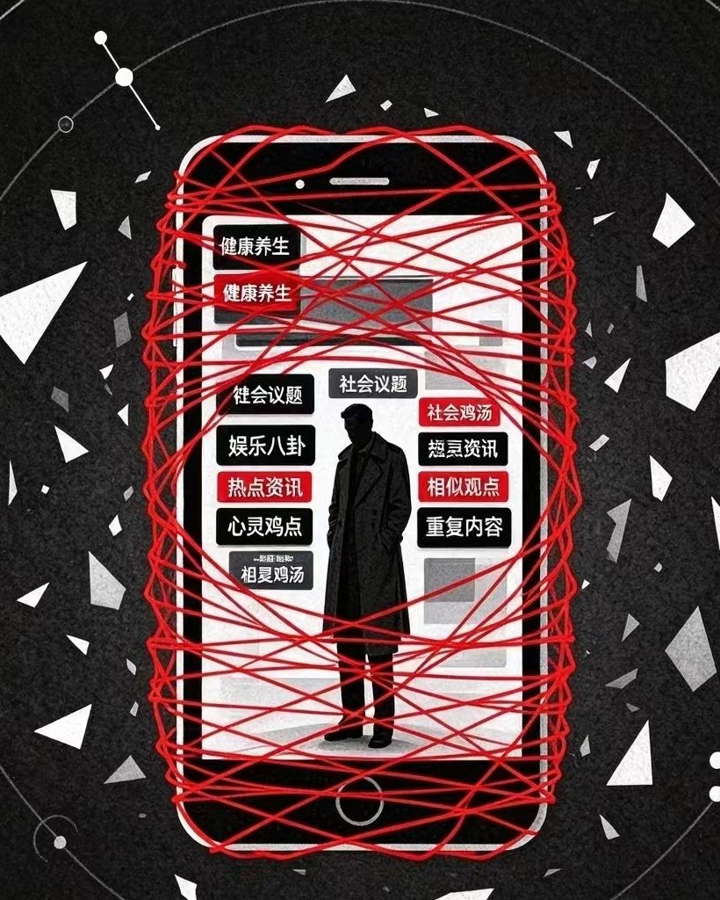
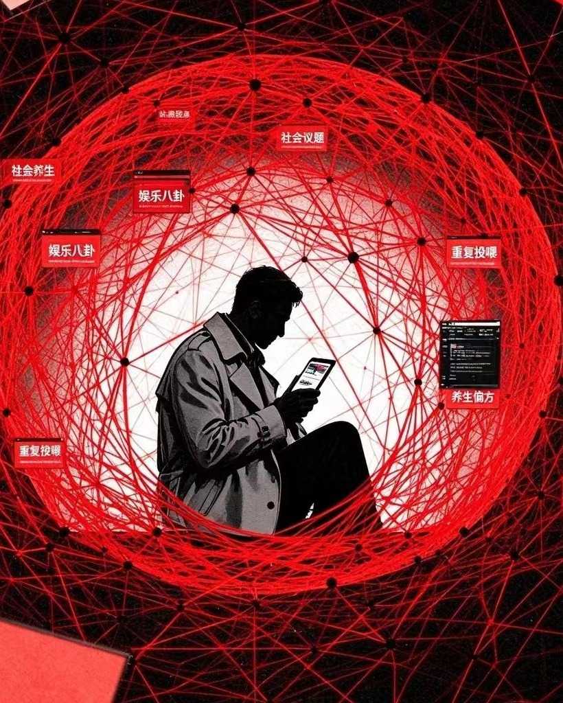
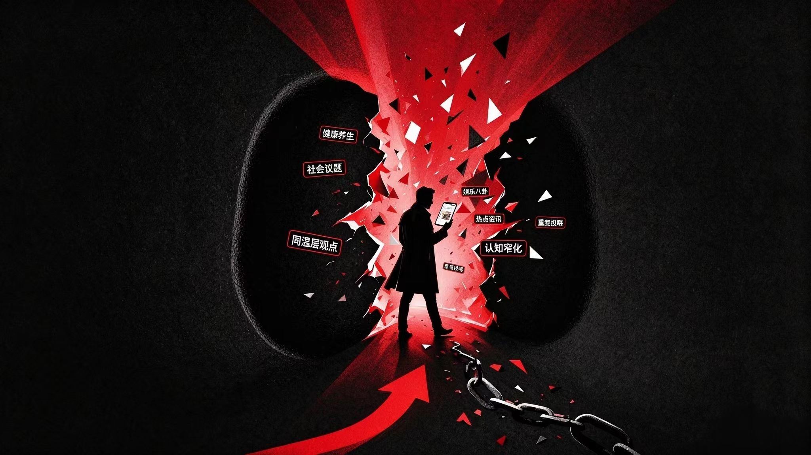

CASE FILE · 2026
信息
茧房
算法对普通公众的无声谋杀
THE QUIET MURDER
OF THE PUBLIC MIND
传播学 · 网络与新媒体
01 / 10
TOP SECRET
「我没有选择，我只是点了。」
第 47 次刷新之后 · 受访者原话
CLUE 01 · 六章
02
六章
SIX FILES
01
现场
三个你经历过的深夜
02
溯源
2006 年的一个比喻
03
手法
记录、预测、推送，三步闭环
04
规模 · 反证 · 实验
95.4%，和那个小得多的数
05
物证
四张照片，一条红线
06
症状 · 破茧
你并不知道自己在茧里
按 → 逐章展开 PRESS TO REVEAL
TOP SECRET
CASE 01 · 案发现场
03
02:47 第 47 次刷新
你以为是自制力
其实是有人在选

推荐页 · 未搜索
全部来自「猜你喜欢」
CASE 02 · 概念溯源
04
PLATE 01 — PICA PICA
一个 2006 年的比喻
2006
桑斯坦《信息乌托邦》
人只挑让自己舒服的信息，一层层把自己裹起来 —— 像蚕。
2011
帕里泽 · TED「过滤气泡」
搜索引擎与社交平台把用户隔在「智能隔离」里。演讲播放超 400 万次。
喜鹊只捡亮的，
算法只捡你点过的。
信息茧房 / INFORMATION COCOON
过滤气泡 / FILTER BUBBLE
CASE 03 · 作案手法
05
三步，闭环
STEP 01
记录
看完还是划走、停留几秒、有没有互动 —— 都变成权重。
STEP 02
预测
它不推最好的，只推最像你的 —— 把相似当成喜欢。
STEP 03
推送并强化
你看了，它记下来，再推同类。信息只进不出。
正反馈 · 每一圈都更窄一点

每一根线都还在，
只是看不出头在哪
它不生产内容，只决定你先看见什么。
CASE 04 · 规模与反证
06
95.4%
的中国网民在用短视频
每天 156 分钟
≈ 两个半小时活在茧里
每 100 人里，5 个人不在
CNNIC 第 57 次《中国互联网络发展状况统计报告》2026.02
10.74 亿人
68%
的英国公众，处在党派化的新闻回声室
但这是几千万人。
同一个国家，不同的世界 · Fletcher & Nielsen 2017
CASE 04 · 犯罪时间线
07
30 天，首页只剩美食
起点：八类内容兴趣相近，只有美食高一点点（12.5%）。
DAY 01
八类都能看到
DAY 10
美食开始变多
DAY 20
一半是美食
DAY 30
只剩美食

每上一级，能看见的就越少
关上门的不是算法，是「你看 → 它记 → 再推 → 又看」。
对照组：若不形成反馈循环，60 天后主导类仅约三成 · 情景推演，非真实用户追踪
CASE 05 · 物证
08

28 / 07 / 02:47
EXHIBIT 01
六条标签，六条红线

28 / 07 / 03:12
EXHIBIT 02
同质化内容，一层套一层
28 / 07 / 03:40
EXHIBIT 03
越走越窄

28 / 07 / 04:05
EXHIBIT 04
自己织的那个壳
四件物证指向同一件事：候选池是被人缩小的
CASE 06 · 受害者群像
09
三种失能，同时发生
不是一个人被害，是一整层人同时失去判断力。
01
跨界能力丧失
只看一类，就再也接不上别的领域。
02
批判思维退化
信息都替你筛好了，你只剩接受这一动作。
03
深度思考消亡
三分钟一条，脑子只记得住开头。
算法没有恶意，只是把「留住你」执行得很好
DIAGNOSIS CARD
3.21 / 5
知识共享得分，全维度最低
β = −0.25 纯娱乐使用对创新的系数

VERDICT · 结案陈词
10
伤害不是均匀的
它精确投放给最难自救的人
关掉个性化推荐 · 追问排序依据 · 行使你的退出权
《算法推荐管理规定》第十七条 2022.03.01 施行
CASE CLOSED